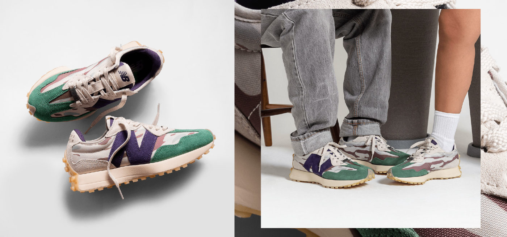

Lacoste celebra os seus 90 anos com novo posicionamento global.
Com o objetivo de celebrar seus 90 anos, a Lacoste lançou o seu novo posicionamento global que tem como objetivo promover encontros entre diferentes comunidades da marca ao redor do mundo. Nas peças publicitárias, a marca buscou promover interações entre pessoas distintas, mas com similaridades culturais e, para isso, os coletivos de Tóquio, capital japonesa, Paris e Marselha, na França, Nova Iorque e Miami, nos Estados Unidos, e Seul, na Coreia do Sul protagonizaram o filme que tem os “lacosteiros” de São Paulo como protagonistas.
Os 90 anos da Lacoste trouxe música junto a Kondzilla e GR6.
A Lacoste, dando continuidade dentre as diversas comemorações que tem para seus 90 anos, lançou no dia 29/05 o videoclipe “Croco 90’’, em parceria com os MCs Neguinho do Kaxeta, Kelvinho e Hariel. O clipe teve sua captação e produção realizada pela Kondzilla e GR6, sendo gravado durante a Casa Lalá, ativação da marca criada com os Lacosteiros em São Paulo, que aconteceu de 18 a 27 de maio. A maior parte das cenas foi filmada dentro da Casa Lalá, na primeira apresentação da música no dia de sua inauguração.
Quando “AIR: A História por Trás do Logo” chega ao streaming?
Diretamente das telonas para as telinhas, “AIR: A História por Trás do Logo” já tem data para chegar no streaming – ou melhor dizendo, no Prime Video! O filme conta a história da parceria entre o então novato Michael Jordan e a incipiente divisão de basquete da Nike, que revolucionou o mundo dos esportes e da cultura contemporânea com a marca de tênis Air Jordan. Aclamado pela crítica, “AIR: A História por Trás do Logo” é uma produção do Amazon Studios, Skydance Sports, Mandalay Pictures; além de ser o primeiro projeto da Artists Equity de Affleck e Damon. Com roteiro assinado por Alex Convery, o filme chega ao catálogo do Prime Video com exclusividade em 12 de maio.
Bota da MSCHF é o novo hit da internet.
As big red boots (grandes botas vermelhas), da MSCHF, foram lançadas oficialmente no dia 16 de fevereiro de 2023. Mas antes mesmo de serem anunciadas para venda, elas viralizaram na internet. A bota, que foi inspirada no desenho Astro Boy, chamou atenção por ser diferente de qualquer outro sapato. Ela está à venda por US$350 no site oficial da marca. Por seu formato grande e vermelho, como já é descrito no nome, e a grande divulgação através de celebridades, ela não teve como passar despercebida. E mesmo dividindo opiniões, virou objeto de desejo de muitos.
MAD Enlatados apresenta coleção inverno ’23.
A marca paulistana MAD Enlatados, destaque da nova safra de marcas nacionais, apresentou o lookbook de sua segunda coleção deste ano. Para o segundo lançamento do ano, a MAD reflete sobre abordagens raciais através de camisetas com gráficos além do comercial e traz costuras e zíperes em curvas, característica que vem sendo aperfeiçoada de coleções anteriores. A nova entrega conta com peças que mesclam referências de workwear e a irreverência já tradicional da marca. A jaqueta com zíper em curva, a calça preta em sarja com costuras também em curva e a camisa que traz uma ilustração de Jesus barbeiro nas costas assumem o posto de peças-chave da coleção. A icônica bolsa Tsuno também reaparece em uma versão dupla face feita confeccionda em sarja marrom de um lado e xadrez do outro.
VANS apresenta terceira coleção com Sandy Liang.
A Vault by Vans – divisão premium e de colaborações especiais da marca californiana – uniu forças novamente com a designer nova-iorquina em coleção inspirada por referências dos anos 90 e conexões pessoais. Inspirada pelas lembranças de infância de Sandy, a entrega conta com interpretações inusitadas de clássicos tênis da Vans e vestuários com grafismos divertidos e fofinhos. A criativa também incluiu inspirações baseadas em filmes, arquitetura e moda. A conexão com a cidade de Nova Iorque também se mantém evidente e se traduz no lookbook, clicado em ambientes bem urbanos que vão de uma cozinha industrial até uma lojinha de bugigangas.
CROCS e sua ascensão no mercado streetwear.
Inspirados pelos sapatos de madeira holandeses, os Crocs surgiram em 2002 como alternativas mais leves e confortáveis aos boat shoes da época. Hoje, mais de duas décadas depois, os calçados que surgiram com propósito utilitário, viraram sinônimo de individualidade e auto expressão – reforçados ainda mais com o uso dos Jibbitz – acessórios que encaixam nos furos dos Crocs e possibilitam a personalização de forma única.
New Balance Grey Day 2023.
No dia 12 de maio, a New Balance comemora ao redor do mundo o tradicional “Grey Day” – uma data que simboliza o legado duradouro da marca e a sua tradicional e icônica cor cinza. A marca de Boston escolheu o Brasil como um dos lugares chaves para essa celebração – que junto ao lançamento de cinco modelos: 574 Legacy, 580, 990v6, 2002R e MORE Trail.
Snkr's
Acesse o nosso guia de lançamentos Snkr.
Conteúdo informativo. Valores em "R$" com base na média comercial.
Galeria
Acesse a galeria de imagens The Urban.

Newsletter
Inscreva-se em nosso newsletter para não perder nenhuma novidade.